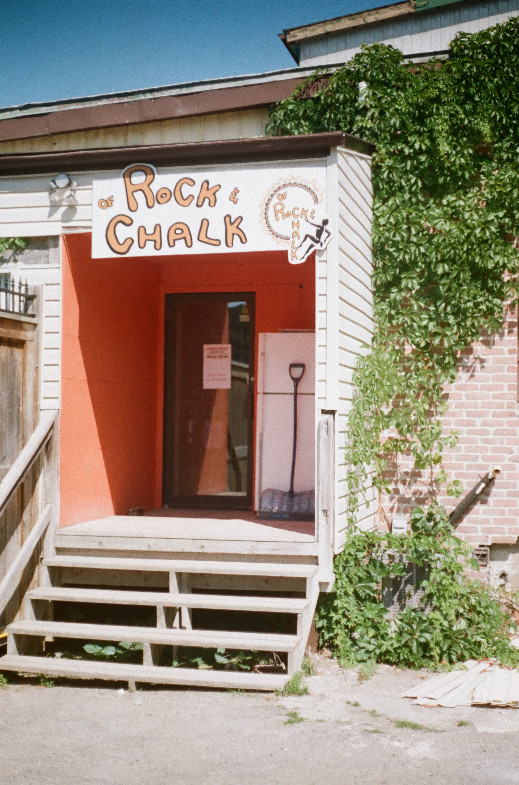
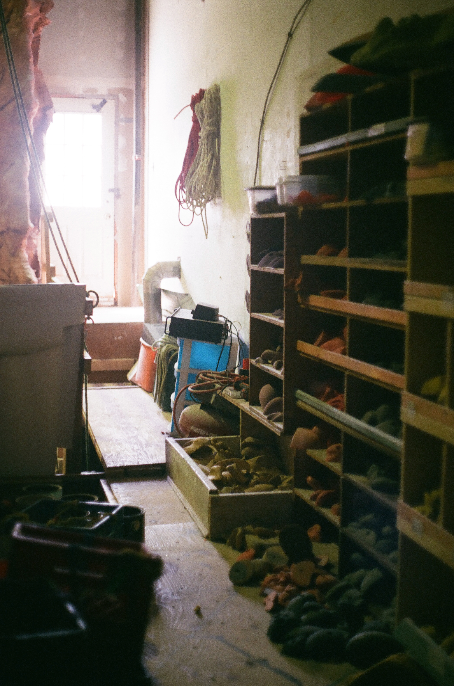
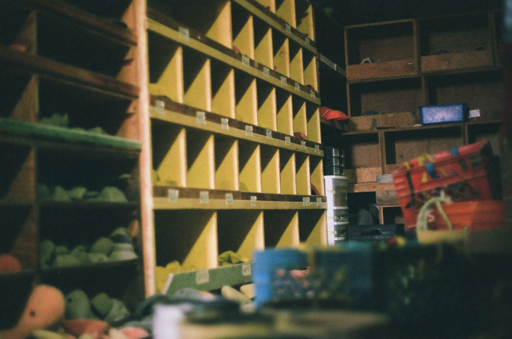
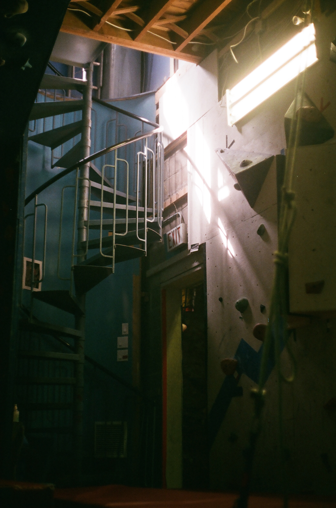
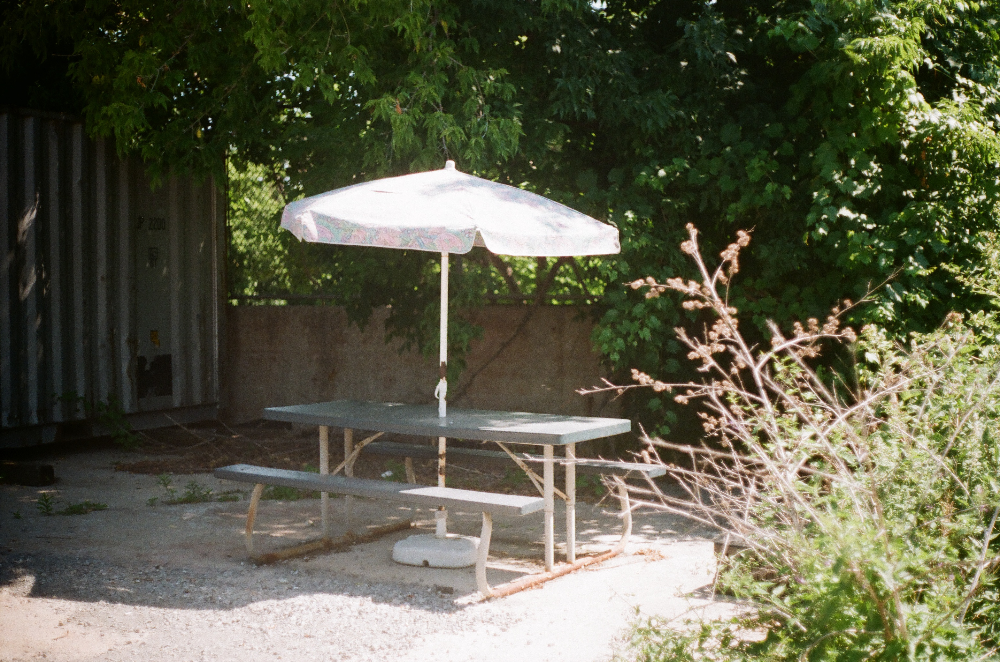

A series of photographs documenting the local climbing gym I worked at in high school. Climbers refer to this gym as a window into the past, as it hadn’t changed much since it opened in the mid-90s.